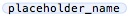

Latexian offers Code Completion for LaTeX and BibTeX content. Code Completion helps you to create documents
with valid syntax, without having to constantly check reference documentation or to memorize a large vocabulary of
keywords. In Latexian, there is a preference option that allows you to choose between having completions
automatically suggested as you type or only having completions suggested when you choose the "Suggest Code
Completion" menu command. Code Completion can also suggest completions for Code Clips that you have setup. See
Code Clips for more information.
Code Completion Preferences
The Code Completion preferences are found in the "Editing" section of the Latexian Preferences. With these preferences, you can
customize whether or not the Code Completion panel will automatically appear while you are editing text. A choice of "Automatic" will
mean that the panel appears automatically; "Manual" indicates that the panel will only appear when you select "Suggest Code Completion"
from the "Syntax" menu (the keyboard shortcut is Command + Return).
The Code Completion Panel
The Code Completion panel contains the suggested completions for the text you are editing. The top of the panel lists the suggested
completions and includes info buttons that will access relevant documentation on the internet. The bottom of the panel contains a brief description
of the currently selected completion. To use the currently selected completion, press Return. You can also double-click a completion
to use it. The up and down arrow keys allow you to easily navigate the completion list.
In the completion list, items are sorted alphabetically, with the exception that
Code Clips always appear after other completions at the end of the list.
Some completions, such as LaTeX commands with arguments, insert placeholders into the document to indicate where you need to add additional text (e.g.
a value for a command argument). These placeholders appear like . When placeholders are added
to your document, use the "Select Next Placeholder" menu item from the "Syntax" menu to select the next placeholder. The keyboard
shortcut for this command is Command + Single Quote.